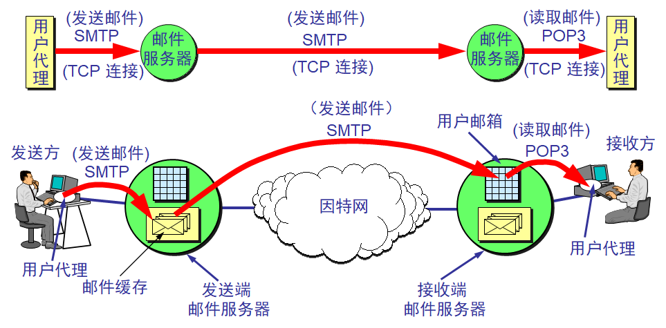
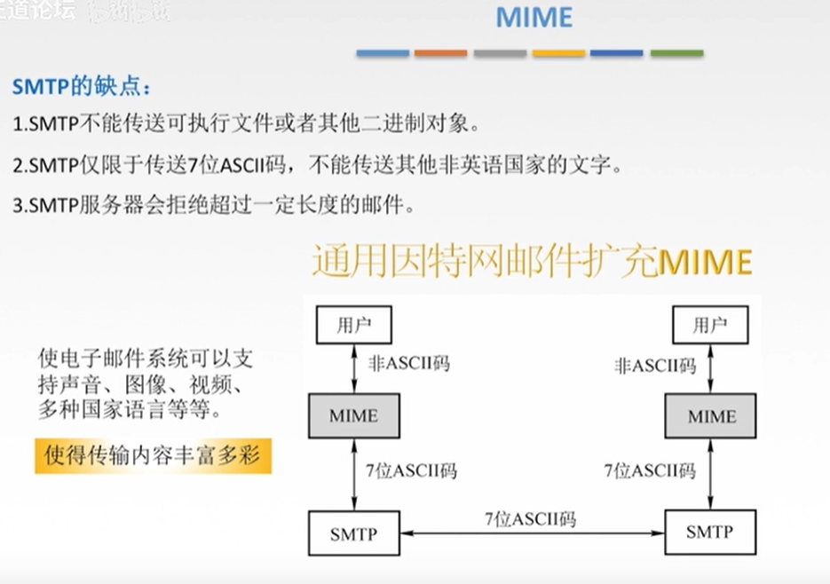
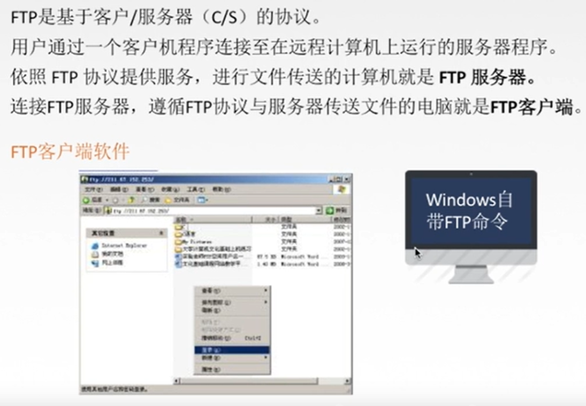
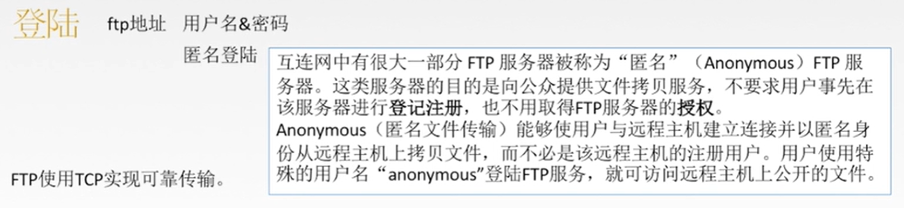

第 26 章 远程登录、电子邮件和文件传输
一. Telnet 的基本概念
TELNET: Terminal NETwork, 终端网络
- 建立到远程计算机的连接 (类似命令行版本的远程桌面)
- 是客户端/服务器架构
二.电子邮件
电子邮件的架构、邮件报文、SMTP 和 MIME、POP3 和 IMAP
构架
- UA: 用户代理程序, 负责生成邮件 (outlook等)
- MTA: 报文传输代理, 负责发送&接收, 客户端只能推入报文 (push)
- MAA: 报文访问代理, 负责提供收到的报文, 客户端只能取出报文 (pull)
- 发送方为 A, 接收方为 B:
- 同一系统: A -> UA -> 系统 -> UA -> B
- 不同系统: A -> UA -> MTA客户端(在邮件服务器上) -> 因特网 -> MTA服务器(在另一台邮件服务器上) -> UA -> B
- 一方未直接连接到邮件服务器: 先通过广域网/局域网把邮件报文发到服务器
- 双方均为👆: A->UA->MTA客户端(在A的计算机上)->MTA客户端(在邮件服务器上)->因特网->MTA服务器(在另一台邮件服务器上)->MAA服务器(同前)->MAA客户端(在B计算机上)->UA->B

MIME [IMP]
MIME: Multipurpose Internet Mail Extension, 多用途因特网邮件扩展
- 将非 ASCII 数据转换成 NVT ASCII 数据
- 
SMTP [IMP]
SMTP: Simple Mail Transfer Protocol, 简单邮件传输协议
- 是报文传输代理 (MTA) 协议
- 定义了一组交换邮件的命令
- 连接建立->邮件发送->连接释放
POP3 和 IMAP4 [IMP]
POP: Post Office Protocol ver 3, 邮局协议版本 3
IMAP: Internet Mail Access Protocol ver 4, 因特网邮件访问协议版本 4
- 都是报文访问代理 (MAA) 协议, 提供用户和邮件服务器间的报文阅读
- POP3:
- 功能简单, 不支持预览
- 支持删除模式和保存模式
- 删除: 邮件从邮箱读取后即被删除
- 保存: 读后不删除
- IMAP4:
- 可以在下载前读取头部或内容中的特定字符串
- 可以部分下载邮件内容
三.文件传输
file transfer protocol
FTP 的架构、FTP 的连接、FTP 的传输方式、端口
FTP [IMP]
客户机/服务器模式
控制端口 21, 数据端口 20
前者在整个会话期间持续连接, 后者仅在文件传输时连接
需要登陆, 但服务器可以允许匿名帐户 (谁都能用)
可以传输文本和二进制文件
FTP 的架构
- 文件传输协议（File Transfer Protocol, FTP）是TCP/IP提供的标准机制，用于从一个主机将文件复制到另一个主机。
FTP 的连接
- FTP与其他客户/服务器应用程序的不同之处在于它在主机之间建立两个连接：一个连接用于数据传输，另一个用于控制信息传输（命令和响应）。
- 在整个交互的FTP会话期间，控制连接始终处于连接状态。数据连接则在每次传输文件时开启然后关闭。
端口
- FTP使用TCP服务。它需要两个TCP连接。熟知端口21用于控制连接，而熟知端口20用于数据连接。
FTP 的传输方式
- 流方式（默认方式）：
- 数据作为连续的字节流从FTP传递给TCP，TCP负责将数据划分成适当大小的段。
- 块方式：
- 压缩方式：
- 如果文件很大，数据可进行压缩。
- 通常使用的压缩方法是游程长度编码。
匿名登录
